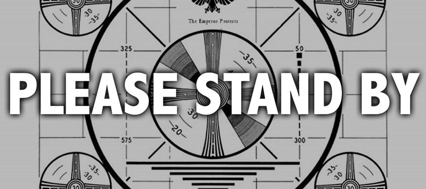

Reaffirming Our Values - A Public Service Announcement
by Ernie Salazar
Posted on June 8, 2014

A few weeks back we looked at a value reflection. In it, I examined a particular value that has had some significance to my life and expounded on its impact. The value in question, was that of public service or being of service to others. I’ve always found joy as well as opportunities to learn when I’ve embraced that value. As I’ve experienced in the last few weeks, that same value can also hold keys to mitigating something we talked about last week, stereotype threat.
I’ve learned many lessons from my parents and perhaps one of the most profound has centered around public service. I was always taught and encourage that whenever I had to much going on or was facing uncertain times, that in those moments, I should put down my burdens and help someone else. It’s been a great tool to minimize stress and even anxiety. I’ve found, when placed in a role of public servant, suddenly my own issues diminish. They may not disappear but they began to see new possibilities and solutions I might have otherwise overlooked.
There will be obstacles as I begin my journey into a new career and life within the tech industry. Not only do I have a wealth of knowledge yet to learn but I’ll likely also have to deal with the real possibility of stereotype threat. It can be daunting to look out upon a pool of prospective colleagues and suddenly realize there are very few with whom you share a culture or group. It can even have you believe that perhaps this isn't the field for someone like you. Whether in those moments or in times when the work or education load seems unbearable, that I’ll turn to public service.
One of the many benefits to a program like Dev Bootcamp is its deep philosophy surrounding pair programming. Not only does it help prepare us with tools that are becoming more and more the industry standard, but it also provides us an outlet to work with our peers. We are able to work cooperatively seeking solutions to challenges. I’ve learned over the last few weeks, that it also provides an opportunity to reaffirm my values. I may be stressed after working hours on a problem set that I can’t seem to solve and the last thing I want to do is sit down and work with someone else. But I do, and suddenly the experience becomes transformative.
My experience so far, has been, that we start working together and opportunities arise where I realize there are things I do know and beyond that, that I can perhaps step out into service and help my partner learn them as well. The relationship is reciprocal, they too share their knowledge with me. Before we know it, we are both coming to solutions that we perhaps wouldn't have found on our own.
Whether it’s a simple example of pair programming or finding some other opportunity to be of service to someone else, the experience is the same. I’m out of my head and not focusing on what I perceive as things I can’t do or can’t learn or don’t belong. The realization and comfort comes that I am on the right path, and that it can only be enhanced in the service of the community around me.